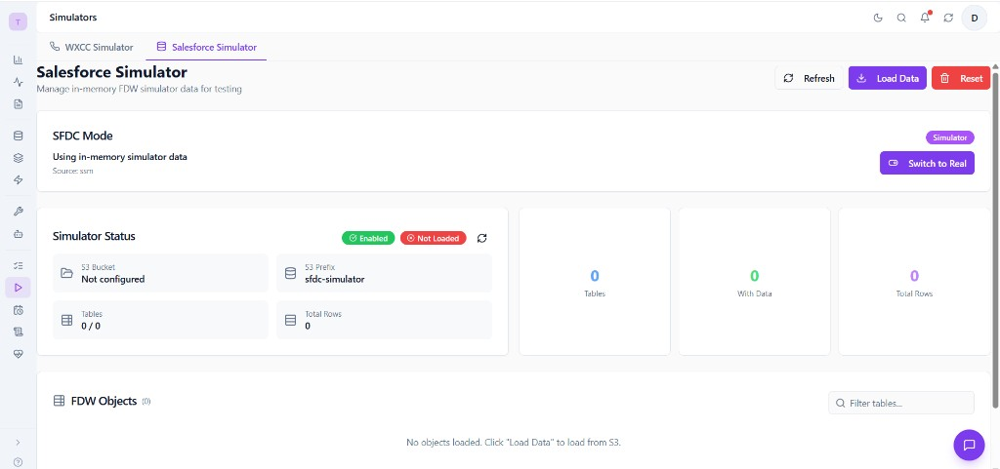

SFDC Simulator Guide¶
Screenshots
To capture additional screenshots of the simulator UI, run the Playwright script:
python3 docs/simulators/capture-simulator-screenshots.py
Overview¶
The SFDC (Salesforce) Simulator replaces the live PostgreSQL Foreign Data Wrapper (FDW) connection to Salesforce with an in-memory data store backed by S3 dumps. This allows the CallSense platform to query Salesforce CRM data (Accounts, Leads, Opportunities, Contacts, and custom objects) during development and testing without a live Salesforce org or a PostgreSQL FDW extension.
Key capabilities:
- Loads a complete snapshot of Salesforce FDW tables from S3 into memory
- Implements the same
FDWDiscoveryServiceandFDWQueryServiceinterfaces as the real FDW, so consuming code works unchanged - Supports filtering, sorting, pagination, and column selection on in-memory data
- Can dump fresh data from a live FDW runtime to S3 for later use
- Mode can be toggled between Simulator and Real at runtime via the UI or API
Architecture¶
Real Mode vs Simulator Mode¶
The platform uses SFDC_SIMULATOR_ENABLED (and the SSM parameter /call-processing/{env}/sfdc/enabled) to decide how FDW queries are served. When the simulator is enabled, fdw_api.configure() injects the SFDCSimulatorService in place of the real PostgreSQL FDW services.
flowchart TB
subgraph realMode [Real Mode]
AppR[CallSense Backend]
FDW_API_R[FDW API Router]
Discovery_R[FDWDiscoveryService]
Query_R[FDWQueryService]
PG[(PostgreSQL\nwith FDW extension)]
SFDC_R[Salesforce API]
AppR --> FDW_API_R
FDW_API_R --> Discovery_R
FDW_API_R --> Query_R
Discovery_R --> PG
Query_R --> PG
PG -->|Foreign Tables| SFDC_R
end
subgraph simMode [Simulator Mode]
AppS[CallSense Backend]
FDW_API_S[FDW API Router]
SimService[SFDCSimulatorService\nin-memory dicts]
S3[(S3 Bucket\nsfdc-simulator)]
AppS --> FDW_API_S
FDW_API_S --> SimService
SimService -->|load_from_s3| S3
endInterface Compatibility¶
The SFDCSimulatorService implements the same method signatures as the real services:
| Interface | Methods | Description |
|---|---|---|
FDWDiscoveryService |
list_foreign_servers(), list_foreign_tables(), get_table_columns(), refresh_cache() |
Schema discovery (servers, tables, columns) |
FDWQueryService |
execute_query() |
Data queries with filters, sorting, pagination |
This means no code changes are required in any FDW consumer -- the swap is transparent.
Component Map¶
| Component | Location | Role |
|---|---|---|
| SFDCSimulatorService | starhub-backend/src/services/sfdc_simulator_service.py |
Core service: loads S3 dumps, serves queries in-memory |
| Simulator API | starhub-backend/src/apis/sfdc_simulator_api.py |
FastAPI router for simulator admin operations |
| Dump Script | starhub-backend/scripts/sfdc-simulator/dump_sfdc_via_fdw.py |
CLI tool to dump live FDW data to S3 |
| FDW Models | starhub-backend/src/models/fdw_models.py |
Shared Pydantic models (ForeignServerInfo, ForeignTableInfo, etc.) |
| UI Panel | starhub-ui/src/components/sfdc-simulator/SFDCSimulatorPanel.tsx |
Main React component for the Salesforce Simulator tab |
| UI Service | starhub-ui/src/services/sfdcSimulatorService.ts |
Frontend API client |
S3 Storage Layout¶
Data is stored in a structured JSON format under a single S3 prefix:
s3://{bucket}/{prefix}/
├── manifest.json # Dump metadata (timestamp, source, counts)
├── servers.json # Foreign server definitions
├── tables.json # Foreign table list (all schemas)
├── columns/
│ ├── starhub_itxp2dev.Account.json # Column metadata per table
│ ├── starhub_itxp2dev.Lead.json
│ └── ...
├── data/
│ ├── starhub_itxp2dev.Account.json # Row data per table
│ ├── starhub_itxp2dev.Lead.json
│ └── ...
└── _dump_status.json # Current dump operation status
| File | Contents |
|---|---|
manifest.json |
Dump timestamp, source URL, schema name, table/row counts, elapsed time |
servers.json |
Array of FDW server definitions (server name, wrapper type, options) |
tables.json |
Array of all foreign tables (schema, table name, server, column count) |
columns/{schema}.{table}.json |
Array of column metadata (name, data type, nullable, ordinal position) |
data/{schema}.{table}.json |
Array of row objects (or {"rows": [...]} format) |
_dump_status.json |
Tracks whether a dump is currently running (for multi-pod consistency) |
Data Sources and Population¶
Where the Data Comes From¶
Unlike the WXCC simulator which generates synthetic data, the SFDC simulator uses real Salesforce data that has been dumped from a live FDW runtime. The data flow is:
flowchart LR
subgraph liveEnv [Live Environment]
SFDC_Live[Salesforce Org]
PG_Live[PostgreSQL + FDW]
ALB[Application Load Balancer\nFDW REST API]
end
subgraph dumpProcess [Dump Process]
DumpScript["dump_sfdc_via_fdw.py\nor POST /dump"]
end
subgraph s3Storage [S3 Storage]
S3[(S3 Bucket\nsfdc-simulator)]
end
subgraph simEnv [Simulator Environment]
SimService[SFDCSimulatorService]
InMemory["In-Memory Dicts\n_servers, _tables,\n_columns, _data"]
end
SFDC_Live --> PG_Live
PG_Live --> ALB
ALB --> DumpScript
DumpScript --> S3
S3 -->|load_from_s3| SimService
SimService --> InMemoryDump Process¶
The dump process queries a running FDW API to extract:
- Foreign servers -- via
GET /api/fdw/servers - Foreign tables -- via
GET /api/fdw/tables - Column metadata -- via
GET /api/fdw/tables/{schema}/{table}/columnsfor each table - Row data -- via
POST /api/fdw/queryfor each selected table
Priority Tables¶
When dumping without specifying tables, only high-value tables are included by default:
| Table | Type |
|---|---|
Account |
Standard Salesforce object |
Lead |
Standard Salesforce object |
Opportunity |
Standard Salesforce object |
Contact |
Standard Salesforce object |
RecordType |
Standard Salesforce object |
cspmb__Price_Item__c |
Custom managed package object |
ContentVersion |
File/document versions |
ContentDocumentLink |
Document-to-record associations |
Note |
Note records |
Use --all to dump every table in the schema (slower, but comprehensive).
Load Process¶
When the simulator starts (or when Load Data is clicked in the UI):
manifest.jsonis downloaded and validatedservers.jsonis parsed intoForeignServerInfoobjectstables.jsonis parsed intoForeignTableInfoobjects- All
columns/*.jsonfiles are downloaded and parsed intoColumnInfolists, indexed by(schema, table)tuple - All
data/*.jsonfiles are downloaded and parsed into row lists, indexed by(schema, table)tuple - The service sets
_loaded = Trueand records the load timestamp
The loaded data is fully queryable via the standard FDW query interface.
Using the Simulator (UI)¶
The SFDC Simulator is accessed via Operations > Simulators > Salesforce Simulator tab.
Page Layout¶

The Salesforce Simulator page is organized into these sections:
- Header -- Title, Refresh / Load Data / Reset buttons
- SFDC Mode Toggle -- Switch between Simulator and Real mode
- Simulator Status -- Card showing enabled/loaded state, S3 bucket/prefix, table and row counts
- Statistics -- Visual summary: Tables, Tables With Data, Total Rows
- FDW Objects Table -- List of all loaded foreign tables with schema, name, column count, row count
- Dump from Live FDW -- Section for creating fresh dumps from a running real FDW
Mode Toggle¶
The mode toggle at the top of the page (visible in the overview screenshot as "SFDC Mode") shows the current data source:
- Simulator badge (green) -- The platform is using in-memory simulator data.
- Real badge -- The platform is using the live PostgreSQL FDW connection.
Click Switch to Real or Switch to Simulator to toggle the mode. This:
- Updates the SSM parameter
/call-processing/{env}/sfdc/enabled - Changes how
fdw_apiresolves its service providers - Takes effect immediately for subsequent FDW queries
Warning
Switching to Real mode requires a working PostgreSQL FDW connection with valid Salesforce credentials. If the FDW is not configured, queries will fail.
Loading Data¶
Click Load Data in the header to trigger SFDCSimulatorService.load_from_s3(). This downloads all S3 dump files into memory. The status card will update to show:
- Loaded badge (green) -- Data is ready to serve
- Not Loaded badge (red) -- No data in memory (need to click Load Data)
The load operation runs in the background and typically completes in a few seconds for small datasets, or up to 30 seconds for large schemas.
Auto-Load
The service auto-loads from S3 on the first query if data hasn't been loaded yet (ensure_loaded() is called before any query). However, clicking Load Data explicitly gives you visibility into the load result.
Simulator Status Card¶
The status card displays:
| Field | Description |
|---|---|
| Enabled | Whether the simulator service is active |
| Loaded | Whether S3 data has been loaded into memory |
| S3 Bucket | The S3 bucket holding the dump data |
| S3 Prefix | The S3 key prefix (default: sfdc-simulator) |
| Tables | Total number of foreign tables in the dump |
| Tables with Data | Number of tables that have at least one row |
| Total Rows | Sum of all row counts across all tables |
| Dump Timestamp | When the S3 data was originally dumped |
| Last Loaded | When the data was last loaded into memory |
FDW Objects Table¶
The FDW Objects table (visible at the bottom of the overview screenshot) lists all loaded foreign tables:
| Column | Description |
|---|---|
| Schema | Salesforce schema name (e.g., starhub_itxp2dev) |
| Table | Table name (e.g., Account, Lead, Opportunity) |
| Columns | Number of columns in the table |
| Rows | Number of data rows loaded |
Click any row to open the Data Browser Modal, which shows the actual records in a paginated table.
A filter input above the table lets you search tables by name.
Data Browser Modal¶
Clicking a table row opens a modal displaying:
- Column headers matching the table schema
- Row data in a scrollable, paginated table
- Navigation controls (limit, offset)
This is useful for verifying that the dump contains the expected data before running analytics pipelines.
Dump from Live FDW¶
The Dump from Live FDW section at the bottom of the page allows you to create a fresh data snapshot from a running real FDW environment:
- Enter the Source URL of a deployed FDW runtime (the ALB URL).
- Optionally specify a schema name (default:
starhub_itxp2dev). - Click Start Dump.
The dump runs in the background, querying the live FDW API and uploading results to S3. Progress is tracked via _dump_status.json in S3 for multi-pod consistency.
After the dump completes, click Load Data to refresh the in-memory data from the new S3 dump.
Resetting Data¶
Click Reset to reload the original S3 dump into memory. This discards any in-memory modifications and re-fetches all data from S3, effectively restoring the simulator to its last-dumped state.
Using the Simulator (CLI)¶
Dump Script¶
The dump script (starhub-backend/scripts/sfdc-simulator/dump_sfdc_via_fdw.py) extracts data from a live FDW runtime and saves it to S3 or a local directory.
Basic Usage¶
# Dump priority tables from a deployed environment to S3
python scripts/sfdc-simulator/dump_sfdc_via_fdw.py \
--url http://k8s-alb.elb.amazonaws.com \
--s3-bucket call-processing-dev-sfdc-simulator
# Auto-detect ALB URL from kubectl and dump to S3
python scripts/sfdc-simulator/dump_sfdc_via_fdw.py \
--auto-detect \
--s3-bucket call-processing-dev-sfdc-simulator
# Dump specific tables only
python scripts/sfdc-simulator/dump_sfdc_via_fdw.py \
--url http://k8s-alb.elb.amazonaws.com \
--tables Account,Lead,Contact,Opportunity \
--s3-bucket call-processing-dev-sfdc-simulator
# Dump ALL tables (slow -- queries every table in the schema)
python scripts/sfdc-simulator/dump_sfdc_via_fdw.py \
--url http://k8s-alb.elb.amazonaws.com \
--all \
--s3-bucket call-processing-dev-sfdc-simulator
# Local-only dump (no S3 upload)
python scripts/sfdc-simulator/dump_sfdc_via_fdw.py \
--url http://k8s-alb.elb.amazonaws.com \
--local-dir ./sfdc-dump
CLI Options Reference¶
| Option | Type | Default | Description |
|---|---|---|---|
--url |
URL | -- | ALB URL of the deployed FDW runtime |
--auto-detect |
flag | off | Auto-detect ALB URL from kubectl get ingress |
--namespace |
string | all | Kubernetes namespace for auto-detection |
--schema |
string | starhub_itxp2dev |
PostgreSQL schema to dump |
--tables |
string | -- | Comma-separated table names (overrides priority list) |
--all |
flag | off | Dump data for all tables in the schema |
--limit |
int | 10,000 | Max rows per table |
--s3-bucket |
string | -- | S3 bucket for upload |
--s3-prefix |
string | sfdc-simulator |
S3 key prefix |
--aws-profile |
string | external-access |
AWS CLI profile name |
--local-dir |
path | -- | Local directory for dump (alternative to S3) |
Note
Either --s3-bucket or --local-dir (or both) must be specified.
API Reference¶
Simulator Admin Endpoints (/api/v1/sfdc-simulator)¶
| Method | Endpoint | Description |
|---|---|---|
| GET | /status |
Simulator status (enabled, loaded, bucket, table/row counts) |
| POST | /load |
Load data from S3 into memory (background) |
| POST | /reset |
Reset (reload from S3) |
| GET | /objects |
List all loaded tables with row counts |
| GET | /objects/{schema}/{table} |
Get records for a table (supports limit, offset query params) |
| GET | /objects/{schema}/{table}/columns |
Get column metadata for a table |
| POST | /dump |
Dump from a live FDW runtime to S3 (background) |
| GET | /dump/status |
Check dump operation progress |
| POST | /restart-pods |
Rolling restart of backend pods |
| GET | /health |
Health check |
Config Endpoints (/api/v1/config)¶
| Method | Endpoint | Description |
|---|---|---|
| GET | /sfdc-mode |
Get current SFDC mode (simulator or real) |
| PUT | /sfdc-mode |
Set SFDC mode (body: {"enabled": true/false}) |
Example: Get Simulator Status¶
Response:
{
"enabled": true,
"loaded": true,
"bucket": "call-processing-dev-sfdc-simulator",
"prefix": "sfdc-simulator",
"schema": "starhub_itxp2dev",
"table_count": 245,
"tables_with_data": 12,
"total_rows": 8543,
"dump_timestamp": "2026-03-14T10:30:00+00:00",
"last_loaded": "2026-03-15T08:00:00+00:00"
}
Example: Load Data from S3¶
Response:
{
"success": true,
"message": "Loaded 245 tables, 12 with data, 8543 rows in 3.2s",
"tables": 245,
"tables_with_data": 12,
"total_rows": 8543
}
Example: Toggle Mode¶
# Switch to simulator mode
curl -X PUT http://localhost:8000/api/v1/config/sfdc-mode \
-H "Content-Type: application/json" \
-d '{"enabled": true}'
# Switch to real FDW mode
curl -X PUT http://localhost:8000/api/v1/config/sfdc-mode \
-H "Content-Type: application/json" \
-d '{"enabled": false}'
Example: Browse Table Data¶
# Get first 50 rows from the Account table
curl "http://localhost:8000/api/v1/sfdc-simulator/objects/starhub_itxp2dev/Account?limit=50&offset=0"
Configuration Reference¶
Environment Variables¶
| Variable | Default | Description |
|---|---|---|
SFDC_SIMULATOR_ENABLED |
false |
Enable the SFDC simulator (use in-memory data instead of real FDW) |
SFDC_SIMULATOR_BUCKET |
-- | S3 bucket containing the FDW data dump |
SFDC_SIMULATOR_PREFIX |
sfdc-simulator |
S3 key prefix for dump files |
System Settings (UI)¶
The SFDC Simulator settings are also available in the application Settings page under System > SFDC Simulator. This provides an admin-friendly UI for editing the SSM parameters without using the CLI or API:
| Setting | Type | Default | Description |
|---|---|---|---|
| Enabled | Toggle | off | Enable SFDC simulator mode (use in-memory data instead of real FDW) |
| Bucket | Text | call-processing-{env}-sfdc-simulator |
S3 bucket for SFDC simulator data dumps |
| Prefix | Text | sfdc-simulator |
S3 prefix for SFDC simulator data |
Changes are persisted to AWS SSM Parameter Store and take effect immediately. Use Save Changes to apply or Reset to revert to defaults.
AWS SSM Parameters¶
| Parameter Path | Description |
|---|---|
/call-processing/{env}/sfdc/enabled |
true/false -- master enable flag (toggled by Config API or Settings UI) |
/call-processing/{env}/sfdc/bucket |
S3 bucket name for simulator data dumps |
/call-processing/{env}/sfdc/prefix |
S3 key prefix for dump files |
In-Memory Data Structure¶
When loaded, the service holds data in these Python structures:
| Attribute | Type | Description |
|---|---|---|
_servers |
List[ForeignServerInfo] |
Foreign server definitions |
_tables |
List[ForeignTableInfo] |
Foreign table metadata |
_columns |
Dict[(schema, table), List[ColumnInfo]] |
Column metadata indexed by table |
_data |
Dict[(schema, table), List[dict]] |
Row data indexed by table |
_manifest |
Dict |
Dump metadata (source, timestamp, counts) |
_loaded |
bool |
Whether data has been loaded from S3 |
_loaded_at |
datetime |
When the last load completed |
Query Capabilities¶
The in-memory query engine supports:
| Feature | Description |
|---|---|
| Column selection | Return only specified columns |
| Filtering | Operators: eq, neq, gt, gte, lt, lte, like, in |
| Sorting | Single or multiple order_by clauses, ascending or descending |
| Pagination | limit and offset for page-based access |
Troubleshooting¶
Status shows "Not Loaded" after pod restart¶
The in-memory data does not persist across pod restarts. Click Load Data or wait for the first query to trigger auto-loading via ensure_loaded().
"manifest.json not found in S3" error¶
The S3 bucket has no dump data. You need to create a dump first:
- Use the Dump from Live FDW section in the UI, or
- Run the dump script:
python scripts/sfdc-simulator/dump_sfdc_via_fdw.py --url <ALB_URL> --s3-bucket <BUCKET>
Load takes a long time or times out¶
Large schemas with hundreds of tables and thousands of rows can take 30+ seconds to load. Solutions:
- Dump only priority tables (the default) instead of using
--all. - Check the S3 bucket region matches the pod's region to minimize latency.
- If a single table has an excessive number of rows, re-dump with a lower
--limit.
Mode switch has no effect¶
- Verify the SSM parameter was updated:
GET /api/v1/config/sfdc-mode - The mode change affects new queries but does not reload data. If switching to simulator, ensure data is loaded.
- Some operations may cache the mode at startup. A pod restart (
POST /api/v1/sfdc-simulator/restart-pods) ensures all pods pick up the new mode.
FDW Objects table shows 0 rows for all tables¶
The dump may have only captured metadata (servers, tables, columns) without row data. Check manifest.json:
Look at tables_with_data and total_rows_dumped. If zero, re-run the dump with explicit table names or --all.
Dump fails with connection errors¶
- Verify the source URL points to a running FDW runtime with valid
/api/fdw/serversendpoint. - Check that the source environment has valid Salesforce FDW credentials configured.
- Increase
--limittimeout if tables have very large row counts. - Ensure the dump script has network access to the ALB (VPN, security groups, etc.).
Data appears stale¶
The simulator serves whatever was last loaded from S3. To get fresh data:
- Run a new dump from the live FDW (UI or CLI).
- Click Load Data (or Reset) to reload from S3.